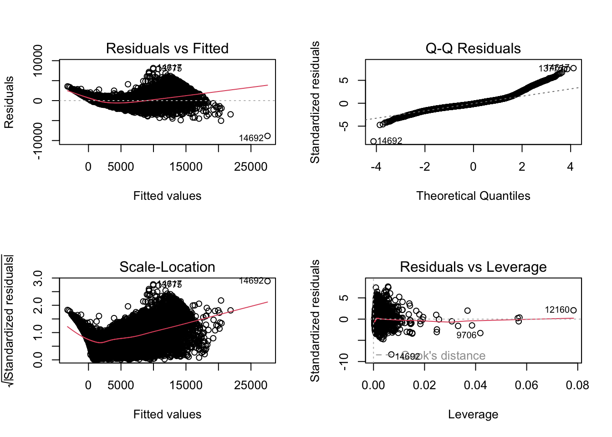

The goal of this analysis is to explore the relationships between cubic zirconia gemstone characteristics (e.g., carat, cut, color, clarity) and price. The analysis emphasizes inference, focusing on identifying significant predictors and understanding their relationships while ensuring statistical rigor.
# Load required librarieslibrary(tidyverse)
── Attaching core tidyverse packages ──────────────────────── tidyverse 2.0.0 ──
✔ dplyr 1.1.4 ✔ readr 2.1.4
✔ forcats 1.0.0 ✔ stringr 1.5.1
✔ ggplot2 3.4.4 ✔ tibble 3.2.1
✔ lubridate 1.9.3 ✔ tidyr 1.3.0
✔ purrr 1.0.2
── Conflicts ────────────────────────────────────────── tidyverse_conflicts() ──
✖ dplyr::filter() masks stats::filter()
✖ dplyr::lag() masks stats::lag()
ℹ Use the conflicted package (<http://conflicted.r-lib.org/>) to force all conflicts to become errors
library(car)
Warning: package 'car' was built under R version 4.3.3
Loading required package: carData
Attaching package: 'car'
The following object is masked from 'package:dplyr':
recode
The following object is masked from 'package:purrr':
some
library(dplyr)library(MASS)
Attaching package: 'MASS'
The following object is masked from 'package:dplyr':
select
library(gridExtra)
Attaching package: 'gridExtra'
The following object is masked from 'package:dplyr':
combine
New names:
Rows: 26967 Columns: 11
── Column specification
──────────────────────────────────────────────────────── Delimiter: "," chr
(3): cut, color, clarity dbl (8): ...1, carat, depth, table, x, y, z, price
ℹ Use `spec()` to retrieve the full column specification for this data. ℹ
Specify the column types or set `show_col_types = FALSE` to quiet this message.
• `` -> `...1`
head(data)
# A tibble: 6 × 11
...1 carat cut color clarity depth table x y z price
<dbl> <dbl> <chr> <chr> <chr> <dbl> <dbl> <dbl> <dbl> <dbl> <dbl>
1 1 0.3 Ideal E SI1 62.1 58 4.27 4.29 2.66 499
2 2 0.33 Premium G IF 60.8 58 4.42 4.46 2.7 984
3 3 0.9 Very Good E VVS2 62.2 60 6.04 6.12 3.78 6289
4 4 0.42 Ideal F VS1 61.6 56 4.82 4.8 2.96 1082
5 5 0.31 Ideal F VVS1 60.4 59 4.35 4.43 2.65 779
6 6 1.02 Ideal D VS2 61.5 56 6.46 6.49 3.99 9502
Response Variable:
Price : the Price of the cubic zirconia.
Possible Covariates:
Carat : Carat weight of the cubic zirconia.
Cut : Describe the cut quality of the cubic zirconia. Quality is increasing order Fair, Good, Very Good, Premium, Ideal.
Color: Colour of the cubic zirconia.With D being the best and J the worst.
Clarity : cubic zirconia Clarity refers to the absence of the Inclusions and Blemishes. (In order from Best to Worst, FL = flawless, I3= level 3 inclusions) - FL, IF, VVS1, VVS2, VS1, VS2, SI1, SI2, I1, I2, I3
Depth : The Height of a cubic zirconia, measured from the Culet to the table, divided by its average Girdle Diameter.
Table : The Width of the cubic zirconia's Table expressed as a percentage of its Average Diameter.
X : Length of the cubic zirconia in mm.
Y : Width of the cubic zirconia in mm.
Z : Height of the cubic zirconia in mm.
# A tibble: 6 × 10
carat cut color clarity depth table x y z price
<dbl> <fct> <fct> <fct> <dbl> <dbl> <dbl> <dbl> <dbl> <dbl>
1 0.3 Ideal E SI1 62.1 58 4.27 4.29 2.66 499
2 0.33 Premium G IF 60.8 58 4.42 4.46 2.7 984
3 0.9 Very Good E VVS2 62.2 60 6.04 6.12 3.78 6289
4 0.42 Ideal F VS1 61.6 56 4.82 4.8 2.96 1082
5 0.31 Ideal F VVS1 60.4 59 4.35 4.43 2.65 779
6 1.02 Ideal D VS2 61.5 56 6.46 6.49 3.99 9502
Distributions of Variables
# Function to calculate proportions and create a plotcreate_proportion_plot <-function(var, var_name) { prop_table <-prop.table(table(var)) *100 prop_df <-as.data.frame(prop_table)colnames(prop_df) <-c(var_name, "proportion")ggplot(prop_df, aes(x =get(var_name), y = proportion)) +geom_bar(stat ="identity", fill ="purple", color ="white") +labs(x = var_name, y ="Proportion (%)", title =str_glue("Proportion of Categories in {str_to_title(var_name)}")) +theme_minimal() +theme(axis.text.x =element_text(angle =45, hjust =1),text =element_text(size =15)) }p1 <-create_proportion_plot(data$clarity, "clarity")p2 <-create_proportion_plot(data$cut, "cut")p3 <-create_proportion_plot(data$color, "color")grid.arrange(p1, p2, p3, nrow =1, ncol =3, widths =c(8, 8, 8), heights =c(8))
The graphs above indicate that the categories within each categorical variable are not equally represented in the data.
ggplot(data, aes(x = price)) +geom_histogram(bins =15, fill ="purple", color ="white") +labs(x ="Price ($)", y ="Count", title ="Price Distribution") +theme(text =element_text(size =16)) +geom_vline(aes(xintercept =mean(price), color ="Mean"), linetype ="dashed", size =1) +geom_vline(aes(xintercept =median(price), color ="Median"), linetype ="dashed", size =1) +scale_color_manual(values =c("Mean"="red", "Median"="blue")) +theme(legend.title =element_text(size =14), legend.text =element_text(size =12))
Warning: Using `size` aesthetic for lines was deprecated in ggplot2 3.4.0.
ℹ Please use `linewidth` instead.
The above histogram for the response variable, Price, shows a right skewed distribution. The mean is higher than the median.
Relationships Between Variables
# graphing all continuous variables against price (the response)continuous_vars =c('carat', 'depth', 'table', 'x', 'y', 'z')labels =c('Carat', 'Depth', 'Table (%)', 'Length (mm)', 'Width (mm)', 'Height (mm)')plot_list <-list()for (i in1:length(continuous_vars)) { p <-ggplot(data = data, aes(x = .data[[continuous_vars[i]]], y = price)) +geom_point(color ="purple", alpha =0.2) +labs(x = labels[i], y ="Price ($)", title =str_glue("Price vs {stringr::str_to_title(continuous_vars[i])}")) +theme(text =element_text(size =12)) plot_list[[i]] <- p}grid.arrange(grobs = plot_list, nrow =3, col =2)
todo
cat_vars =c('cut', 'color', 'clarity')for (i in1:length(cat_vars)) { p <-ggplot(data = data, aes(x = .data[[cat_vars[i]]], y = price, color = .data[[cat_vars[i]]])) +geom_boxplot(alpha =0.5) +labs(x = stringr::str_to_title(cat_vars[i]), y ="Price ($)", title =str_glue("Price vs {stringr::str_to_title(cat_vars[i])}")) +theme(text =element_text(size =15))print(p)}
There appears to be a lot of overlap between boxplots in the cut and color plots. This suggests there might not be a strong relationship between different cut and color categories and price. However, there seems to be less overlap between boxes in the clarity plot. For example, there is almost no overlap between the IF (internally flawless) and I1 (level 1 inclusions) categories. This indicates that clarity may be a stronger predictor of price. This is intuitive because gemstones with higher clarity are generally more expensive. Cut and color may not be as strongly correlated with price.
It is interesting to note that in the third plot of price vs clarity, the median price for IF gemstones is lower than the median price for I1 gemstones. This however, is counterintuitive because a flawless gemstone should have the highest price.
The following graph suggests that the lower price for IF gemstones may have been because of lower weights of such cubic zirconia being bought. This suggests there may be some interaction between weight of the gemstone and its clarity in determining the price of a gemstone.
ggplot(data = data, aes(x = clarity, y = carat, color = clarity)) +geom_boxplot(alpha =0.5) +labs(x ="Clarity", y ="Weight (carat)", title ="Carat vs Clarity") +theme(text =element_text(size =15))
ggplot(data, aes(x = carat, y = price)) +geom_point(alpha =0.5) +geom_smooth(method ="lm", col ="red") +labs(title ="Price vs Carat")
`geom_smooth()` using formula = 'y ~ x'
Based on the graph above, we assume that the model to be linear (i.e we do not include higher degree term in our model). There is a slight curve in the graph, so we have decided to include the interaction between carat and clarity to introduce some non-linearity.
Multicollinearity Analysis
Variance Inflation Factor (VIF)
model_initial <-lm(price ~ carat + color + cut + clarity + depth + table + x + y + z, data = data)vif_values <-vif(model_initial)print(vif_values)
GVIF Df GVIF^(1/(2*Df))
carat 23.700250 1 4.868290
color 1.177673 6 1.013722
cut 1.943575 4 1.086614
clarity 1.338129 7 1.021023
depth 2.612679 1 1.616378
table 1.811095 1 1.345769
x 94.946811 1 9.744065
y 14.565816 1 3.816519
z 79.093240 1 8.893438
carat: 22.79 → Severe multicollinearity.
x, z: 92.71 and 78.46 → Extremely severe multicollinearity.
y: 14.53 → Moderate to severe multicollinearity.
depth: 2.30 and table: 1.14 → These are within acceptable ranges.
We saw that the VIF for ‘x’, ‘y’, ‘z’ are high. However, ‘x’, ‘y’, ‘z’ measures the dimension of the diamond and one would think these variables to be independent. Therefore, we created a new variable, namely ‘volume’ to address the problem of multicollinearity.
data$volume <- data$x * data$y * data$zmodel_with_volume <-lm(price ~ carat + cut + color + clarity + depth + table + volume, data = data)vif_with_volume <-vif(model_with_volume)print("VIF for Model with Volume:")
model_without_volume <-lm(price ~ carat + cut + color + clarity + depth + table, data = data)vif_without_volume <-vif(model_without_volume)print("VIF for Model without Volume:")
From the above output, we can see that VIF’s for carat and volume are above the general threshold of 5, suggesting multicollinearity.
We can drop ‘volume’ since it is intuitive to think that ‘carat’ (weight) and ‘volume’ are related. Additionally, ‘carat’ seems more important of a measure for gemstones, as it is more commonly used in practice to measure gemstones. Keeping only carat simplifies the model and avoids redundancy. This is the ideal approach if we wish to retain the interpretability of the model.
Another thing we can do is we can try using Principle Component Regression to address the multicollinearity between carat and volume. This is a good approach if we only wish to create a high accuracy prediction model and not necessarily retain interpretability.
Outlier Detection
From the exploratory data analysis, we can see the presence of a lot of outliers. Here, we will address the problem of outliers.
Standardized Residuals
# Standardized residualsmodel <-lm(price ~ carat + cut + clarity + depth + table, data = data)data$residuals <-rstandard(model)# Identify outliersoutliers <- data %>%filter(abs(residuals) >3) # Residuals > 3 standard deviationsprint(nrow(outliers))
[1] 586
print(outliers)
# A tibble: 586 × 12
carat cut color clarity depth table x y z price volume
<dbl> <fct> <fct> <fct> <dbl> <dbl> <dbl> <dbl> <dbl> <dbl> <dbl>
1 1.04 Premium D VVS2 61.1 60 6.54 6.51 3.99 10984 170.
2 1.8 Very Good E SI1 62.2 57 7.81 7.89 4.88 17273 301.
3 1.69 Ideal F VS2 62.2 57 7.59 7.66 4.74 16789 276.
4 2.8 Premium I SI2 61.1 59 9.03 8.98 5.5 15030 446.
5 1.71 Ideal G VS1 63 56 7.65 7.58 4.8 17009 278.
6 1.5 Very Good F VS1 60.5 55 7.39 7.48 4.5 15585 249.
7 2.11 Premium E SI2 62.4 61 8.19 8.1 5.08 18034 337.
8 1.04 Ideal D IF 61.8 57 6.49 6.52 4.02 14494 170.
9 1.22 Ideal F VVS1 61.2 57 6.88 6.92 4.22 13029 201.
10 1.2 Ideal F VVS1 61.1 55 6.86 6.89 4.2 13088 199.
# ℹ 576 more rows
# ℹ 1 more variable: residuals <dbl>
We can see that we have 586 outliers. This is 586/26967 * 100 ~ 2.17% of our data. Since we are not sure if these outliers are the result of data entry errors, etc, we will not remove the outliers as that may lead to deletion of useful information.
Based on the EDA and due to computational cost, we only include 1 interaction term, namely ‘carat:clarity’ and assuming no interaction between the other covariates.
par(mfrow =c(2, 2)) plot(stepwise_model)

The Residuals vs Fitted plot does not show homoscedasticity. The Q-Q plot also suggests that the residuals do not really follow a normal distribution. Therefore, we need to address by applying log transform on the response variable (price) and one of the covariates (carat). # Results and Interpretation
Based on the summary above, after applying log transformation on ‘carat’ and dropping ‘depth’, and ‘table’ we achieved better R^2 and adjusted R^2. This simpler model is easier for interpretation and has the same adjusted R^2 as the larger models. Since the interaction between some clarity levels and carat are significant, we have chosen to include it in the model.
par(mfrow =c(2, 2)) plot(log_transformed_model)
Now, the residuals vs fitted plot suggests heteroscedasticity is less of a concern as the points are now centering around zero and have constant variance. However, another possible concern is that of a slight curve in the residuals, which might suggest a non-linear relationship. We have already included one non linear relationship - that of the interaction term, however it may not be enough.
The Q-Q plot looks better than the previous model’s, although the deviations at the end suggest a distribution with heavier tails rather than a normal distribution. Alternatively, it may also suggest the presence of outliers, which is present as analyzed previously.
# Trying a cubic relationship between log(carat) and log(price)cubic_relation <-lm(log_price ~ log_carat +I(log_carat^2) +I(log_carat^3) + cut + color + clarity + log_carat:clarity, data = data)summary(cubic_relation)
plot(y = cubic_relation$residuals, x = cubic_relation$fitted.values, main ="Residual Plot")
Although the above cubic model has a higher adjusted R^2 : 0.9849 vs the old model : 0.9831, the additional complexity of the cubic model is not justified by the small increase of 0.0018 in R^2. The residual plot also doesn’t look much better than the previous model. So even though the cubic log(carat) value is significant in the summary, we have decided to choose the more simplistic model as we have already captured some non-linearity with our interaction term between clarity and log_carat.
Our final model for this section is $ log(price) = _0 + _1*log(carat) + _2*cut + _3*color + _4*clarity + _5log(carat)clarity $
Regression Analysis Using PCA To Address Multicollinearity
We will now compare the above method of dropping the volume variable with the PCA method.
# Extracting carat and volume covariates into their own dataframe:data <-read_csv(file = path, col_names =TRUE) |>drop_na(depth)
New names:
Rows: 26967 Columns: 11
── Column specification
──────────────────────────────────────────────────────── Delimiter: "," chr
(3): cut, color, clarity dbl (8): ...1, carat, depth, table, x, y, z, price
ℹ Use `spec()` to retrieve the full column specification for this data. ℹ
Specify the column types or set `show_col_types = FALSE` to quiet this message.
• `` -> `...1`
# Applying PCA on standardized carat and volumepc_car_vol <-princomp(subset_data, cor = T)plot(pc_car_vol)
The above graph shows that most of the variance is captured by the first component. The code cell below calculates that around 98% of variance is captured by the first component. Therefore, we can now regress our model on only the first component as the second isn’t needed given that it is only capturing around 2% of variation.
lambdas <- pc_car_vol$sdev^2# Computing variation proportion captured by first X principal components( sum(lambdas[1]) /sum(lambdas) ) # First PC
[1] 0.9801025
( sum(lambdas[1:2]) /sum(lambdas) ) # First two PCs
plot(y = pcr_model$residuals, x = pcr_model$fitted.values, main ="Residual Plot")
qqnorm(pcr_model$residuals, pch =1, frame =FALSE)qqline(pcr_model$residuals, col ="steelblue", lwd =2)
The residual plot and qq-plot show similar concerns as the model fitted before. Namely, the qq plot’s curve at the end suggests the presence of outliers or heavier tailed distribution of the residuals rather than a normal distribution. The residual plot also suggests the presence of some outliers. There is not as much concern for heteroscedasticity.
As seen above, the pca model required a cubic first principal component and two more covariates: namely depth and table, to be approximately the same adjusted R^2 as the previous method’s model. The previous model’s adjusted R^2 was 0.9831 and the pcr model’s adjusted R^2 is 0.9787. This is a difference of 0.0044, which is rather insignificant. This suggests that while both method perform similarly in explaining the variation in the data, the first model (created by dropping the volume covariate), is better as it is simpler to interpret. This choice is in line with the principle of parsimony. Therefore, we conclude the better model for this data is the model created by dropping the volume variable: